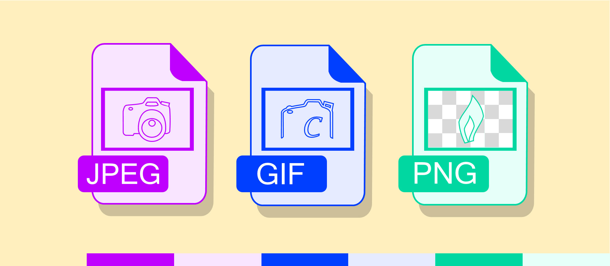

Reanna George
Image formats are the way digital images are organized and stored.
A JPEG is one of the most common image file formats. It stands for "Joint Photographic Experts Group". JPEG's compress pictures for storing and sending and will sometimes change the quality of the picture.
A PNG file is a Portable Network Graphics file. This file is mostly used to store graphics on websites. Unlike a JPEG in PNG's the quality of doesn't change, but the size does grow larger.
GIF stands for Graphics Interchange Format. A GIF is a file that supports both animated and static images. It can contain multiple images in a single file.